TrackAnything manual
Video object tracking with EfficientTAM, SAM2.1 and SAM3. The software runs on spark2 (NVIDIA DGX Spark, GB10). You control it from a Mac.
1. Overview
TrackAnything follows objects through video. You select each object one time, with a point, a box or a name. The model then finds the same object in each new frame and marks its pixels. This marked area is the mask.
The project has three tools:
- Offline benchmark (
track.py). It tracks one or more objects through a video file. You select the objects on frame 0 with points, boxes or names. It measures the speed and writes a video with a mask in a different colour for each object. - Live app (
live.pyandlive.html). The Mac camera sends frames to spark2. spark2 tracks the objects. The browser on the Mac shows the masks on the live camera image. - Personal data removal (
tools/anonymize.pyandanonymize_spark2.sh). It prepares a phone video fordata/. It keeps the subject sharp, blurs the rest, and removes the metadata and the sound (5.5).
The project has two sample videos in data/: albatross.mp4 (two birds dance, public domain) and garbage_cans.mp4 (two garbage cans, the camera moves round them). The tests, the benchmarks and the figures of the live app use albatross.mp4.
In the live app, you can also type the names of the objects, for example "boy . red cup". A detector finds the objects in one frame, and the tracker follows them after that (6.5, 7.6).
You manage the project on the Mac with uv. The scripts copy the project to spark2 and run it there. The Mac does not run the models.
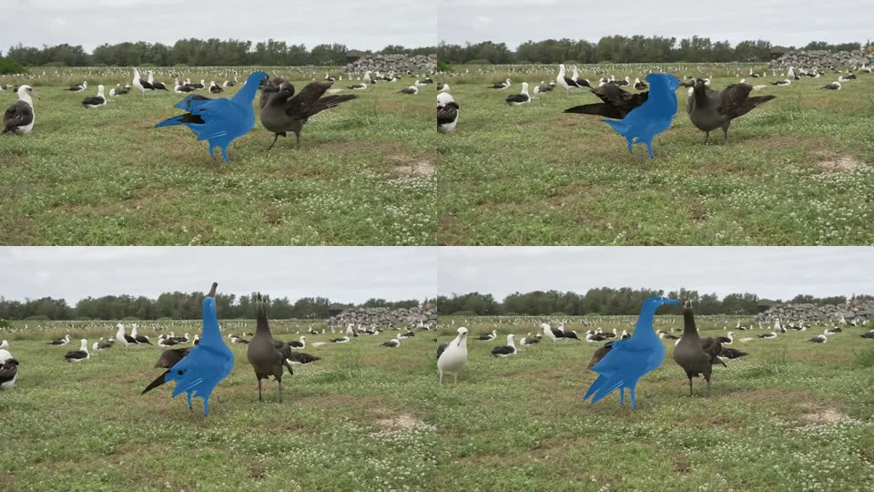
data/albatross.mp4. The prompt is one point on the left bird in frame 0. The mask follows the bird while it moves. In some frames, the mask does not include all of the dark wing.2. Terms
This manual uses each term with one meaning only.
| Term | Meaning |
|---|---|
| frame | One image from a video or from the camera. |
| prompt | Your selection of the object: one point (a click) or one box (a drag). |
| mask | The pixels that the model gives to the object in one frame. |
| logit | The model output for one mask cell. A logit above 0 means "object". A logit below 0 means "not object". |
| mask grid | The low-resolution grid of logits from the model: 128 × 128 (EfficientTAM), 256 × 256 (SAM2.1) or 288 × 288 (SAM3). |
| track | The sequence of masks for one or more objects, from the first prompt to the next new track or clear. |
| object number | The number of an object in a track, shown on its chip. An object keeps its number and its colour until the track ends, also when you remove a different object. A removed number is not used again in the same track. |
| picked object | The object that receives the correction points. Its chip in the Selection panel has a white border. |
| memory bank | The data from earlier frames that the model uses to find the object in the current frame. |
| correction point | A click that changes the mask of the current track. An "add" point puts an area into the mask. A "remove" point takes an area out of the mask. |
| prompt frame | The frame that receives the prompt. The model keeps it in the memory bank for the full track. |
| query | The text that you type in the Find field, for example boy . red cup. A dot, a comma or a semicolon separates the names. |
| detector | The model that finds boxes for the names in a query, in one frame. The live app uses LLMDet tiny. |
| label | The name from the query that the detector gives to one box. |
| score | The confidence of the detector for one box, from 0 to 1. The server keeps boxes with a score of 0.35 or more. |
| subject | In personal data removal: the objects that stay sharp, selected by their names. |
| personal data | Data that can identify a person or a place: location and device in the metadata, sound, license plates, house numbers and faces. |
| review sheet | An image with 12 frames of a video, made by the personal data removal for a check by a person. |
| server | The live.py process on spark2. |
| page | The live app in the Mac browser (live.html). |
| launcher | The script live_spark2.sh on the Mac. |
| viewer | A page that is connected to the server. The server accepts one viewer at a time. |
| origin | The site of a page: scheme, host and port, for example http://localhost:8765. The browser sends it in the Origin header of each WebSocket connection. |
3. System layout
localhost (9.3). The detector (dashed) runs only on the frame after a query.| Part | Location | Function |
|---|---|---|
live_spark2.sh | Mac | Copies the project to spark2, starts the server, opens the SSH tunnel and opens the page. |
live.html | Mac browser | Shows the camera, sends frames, receives logits and draws the mask. |
live.py | spark2 | Decodes frames, runs the tracker and sends the mask grid back. |
Detector (detector.py) | spark2 GPU | Finds boxes for names in one frame. The server loads it at the first query and keeps it in GPU memory. track.py --text and the personal data removal use it too. |
run_spark2.sh | Mac | Copies the project to spark2, runs track.py and copies results/ back. |
track.py | spark2 | Offline benchmark. It also contains load_efficienttam(), which live.py uses. |
anonymize_spark2.sh | Mac | Copies a clip to a private directory on spark2, runs tools/anonymize.py, copies the result back and deletes the copy on spark2. |
tools/anonymize.py | spark2 | Removes personal data from a clip (5.5). |
The browser gives camera access only to pages from localhost or from HTTPS. The SSH tunnel makes the page a localhost page on the Mac. For this reason, do not open the page with the IP address of spark2.
4. Requirements
| Item | Requirement |
|---|---|
| spark2 | SSH access with the host name spark2. To use a different host, set HOST=<name>. |
| uv on spark2 | Installed at ~/.local/bin/uv. The first run installs the environment. torch and torchvision come from the PyTorch cu130 index. |
| Mac tools | ssh, rsync and curl. You do not need a Python environment on the Mac. |
| Browser | Chrome or Safari with WebGL2. |
| Detector | The checkpoint iSEE-Laboratory/llmdet_tiny (660 MB, Apache-2.0). The server downloads it at the first query. It needs no HF_TOKEN. |
| ffmpeg (personal data removal only) | spark2 has no ffmpeg. The launcher adds the package imageio-ffmpeg for the run. The first run downloads it (58 MB). The Mac does not need ffmpeg. |
| Second host (optional) | For parallel tests, a second GB10 host, for example spark3. Use HOST=spark3 with the scripts. See 11 for two setup problems on a new host. |
| SAM3 only | An HF_TOKEN environment variable. The token must have access to the gated repository facebook/sam3. |
The scripts send HF_TOKEN to spark2 through standard input. The token is not in the command line, so ps on spark2 does not show it.
5. Offline benchmark procedures
5.1 Track objects in a video file
- Open a terminal on the Mac.
- Go to the project folder:
cd ~/GWorkspace/TrackAnything. - Find the pixel position of the object in frame 0 of your video.
- Run the benchmark with a point prompt:
./run_spark2.sh data/albatross.mp4 --point 470,260 --out results/birds_s.mp4 - Read the FPS values in the output.
- Open the output video in
results/.
Other examples:
./run_spark2.sh data/albatross.mp4 --point 470,260 --model ti --out results/birds_ti.mp4 # EfficientTAM-Ti
./run_spark2.sh data/albatross.mp4 --point 470,260 --model sam3 --out results/birds_sam3.mp4 # SAM3 (needs HF_TOKEN)
./run_spark2.sh my.mp4 --box 100,80,300,400 --runs 5 --no-compile --out results/my_box.mp4 # box prompt
./run_spark2.sh data/albatross.mp4 --point 470,260 --box 570,172,788,330 --out results/two.mp4 # two objects
./run_spark2.sh data/garbage_cans.mp4 --text "garbage can . trash can" --out results/cans.mp4 # text promptEach --point and each --box is one object, in the order that you give them. --text adds one object for each box that the detector finds on frame 0. You can use the three options together. The output video shows each object in a different colour.
5.2 Options of track.py
| Option | Default | Function |
|---|---|---|
VIDEO | (required) | Path of the input video. |
--point x,y | — | Point prompt in frame-0 pixels: one object. Repeat the option for more objects. |
--box x0,y0,x1,y1 | — | Box prompt in frame-0 pixels: one object. Repeat the option for more objects. |
--text "a . b" | — | Names for the detector (LLMDet tiny, 7.6) on frame 0. Each box that it finds becomes one object. The output lists each box with its score and pixels. You must give at least one --point, --box or --text. |
--threshold | 0.35 | Minimum detector score for --text. |
--fix FRAME:OBJ:x,y:+ | none | Add point on object OBJ in frame FRAME. Use - in place of + for a remove point. The values are pixels in that frame. You can repeat it (5.7). |
--fix-box FRAME:OBJ:x0,y0,x1,y1 | none | New box for object OBJ in frame FRAME. You can repeat it (5.7). |
--redetect N | none | Run the detector every N frames, with --text. It adds objects that come into the frame and ends the tracks of objects that go away (5.8). EfficientTAM only, one run. |
--model | s | s (EfficientTAM-S 512), ti (EfficientTAM-Ti 512) or sam3. |
--runs | 3 | Number of timed runs. Run 0 includes warm-up and compilation. |
--no-compile | off | Do not compile the EfficientTAM image encoder. |
--out | out.mp4 | Output video with the mask on each frame. Use a path in results/. The script copies only results/ back to the Mac. |
FPS is the wall time of propagate_in_video over all frames. This time includes the model and the copy of each mask to the CPU. The benchmark uses bf16 autocast.
The line mask area: frame0 ..., min ..., max ... gives the area of all objects together. With more than one object, the output also has one line for each object, with the number of frames in which its mask is empty.
5.3 Do a regression check
- Run
./run_spark2.sh data/albatross.mp4 --point 470,260. - Find the line
mask area: frame0 ...in the output. - Make sure that the value is approximately
3.03%. The value changes a little from run to run (3.022% to 3.038% on spark2), because the compiled image encoder is not deterministic. - Make sure that the FPS of runs 1 and 2 is approximately 100.
5.4 Sample: garbage cans
The second sample video is data/garbage_cans.mp4: 720 × 1280 (portrait), 30 FPS, 321 frames (10.7 s). The camera moves around two garbage cans on a curb, a blue cart and a brown cart. The view changes from a side view to a front view, and the cans get larger in the frame. The background is blurred and the numbers on the carts are pixelated (5.5).
To track one can, give a box on frame 0. Each run tracks one object.
- Run
./run_spark2.sh data/garbage_cans.mp4 --box 248,617,392,785 --out results/garbage_cans_blue.mp4for the blue cart. - Run
./run_spark2.sh data/garbage_cans.mp4 --box 392,624,498,761 --out results/garbage_cans_brown.mp4for the brown cart. - Open the videos in
results/.
To track both cans in one run, do one of these steps:
- Run
./run_spark2.sh data/garbage_cans.mp4 --box 248,617,392,785 --box 392,624,498,761 --out results/garbage_cans_two.mp4. - Run
./run_spark2.sh data/garbage_cans.mp4 --text "garbage can . trash can" --out results/garbage_cans_text.mp4.
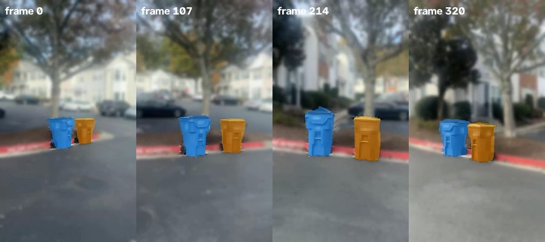
--text "garbage can . trash can", EfficientTAM-S, frames 0, 107, 214 and 320. The detector found two boxes on frame 0 (labels trash can, scores 0.46 and 0.45). Object 1 is blue, object 2 is orange.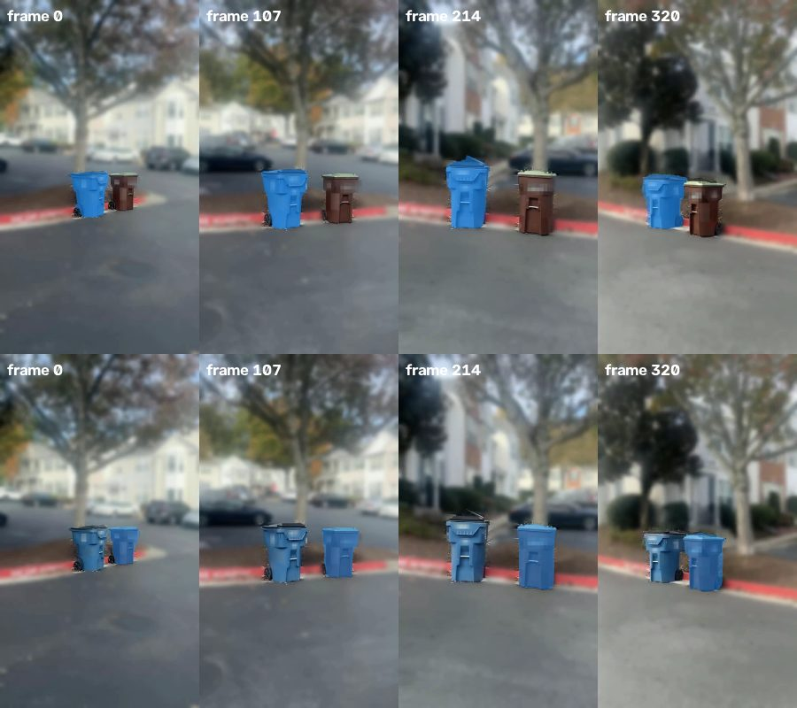
track.py output, EfficientTAM-S, frames 0, 107, 214 and 320. Top: box on the blue cart. Bottom: box on the brown cart. These runs have one object each, so each mask is blue (the colour of object 1). The mask stays on the same cart while the view changes from the side to the front.| Run (spark2) | FPS (3 runs; SAM3: 1 run) | Peak GPU memory | Mask area: frame 0, min, max |
|---|---|---|---|
| EfficientTAM-S, blue cart | 102.3 / 105.4 / 104.6 | 1352 MiB | 1.925%, 1.914%, 3.831% |
| EfficientTAM-S, brown cart | 101.9 / 103.4 / 103.6 | 1352 MiB | 1.248%, 1.248%, 3.722% |
SAM3, blue cart (--model sam3 --runs 1) | 2.7 | 10153 MiB | 1.988%, 1.988%, 3.654% |
EfficientTAM-S, two boxes in one run (--runs 1) | 61.8 | 1415 MiB | blue 1.927%, 1.915%, 3.828%; brown 1.248%, 1.248%, 3.720% |
EfficientTAM-S, --text "garbage can . trash can" (--runs 1) | 61.4 | 1415 MiB | 2 boxes (scores 0.46, 0.45); 1.935%, 1.921%, 3.842%; 1.255%, 1.255%, 3.755% |
SAM3, two boxes in one run (--runs 1) | 2.4 | 10153 MiB | blue 1.988%, 1.988%, 3.654%; brown 1.284%, 1.274%, 3.387% |
In one run, each object has almost the same mask as in a run of its own. Two objects take more time than one, because memory attention and the mask decoder run for each object (10.3).
The mask area grows because the camera comes nearer to the cans. In the live app, use two clicks (6.4) or the query garbage can . trash can (6.5). With that query, the detector found both carts on frame 0 with a score of 0.42 each. A test of both cans together on the original clip gave these results:
- EfficientTAM-S: 56.8 FPS.
- SAM2.1: 13.3 FPS.
- Both models kept the two cans in all frames, with no identity change.
5.5 Add a sample video without personal data
A video from a phone can contain personal data. Remove it before you put the video in data/. Personal data includes the location (GPS) in the metadata, the device name, the time, the sound, license plates, house numbers and faces.
Do not put the original phone video in the repository. Do not copy it to a different place than the work hosts. Delete the copies on the hosts when you are done.
The tool tools/anonymize.py removes this data. The launcher anonymize_spark2.sh runs it on spark2. Do these steps on the Mac:
- Find the names of the subject: the objects that must stay sharp, for example
garbage can . trash can. - Run
./anonymize_spark2.sh my_clip.mov data/garbage_cans.mp4 --subject "garbage can . trash can". - Read the output. Make sure that it lists each subject object, and that it shows
tags left: none. The line also shows how many boxes the tool pixelated. - Read the lines for each object. They list the frames in which the detector found nothing on the object. These frames only have boxes moved from nearby frames, or no boxes. This is correct only for an object without text. Else, look at these frames.
- Open the review sheet in
results/, for exampleresults/garbage_cans_sheet.jpg. - Make sure that no plate, number or face is readable in the sheet.
- Play the output video one time, and look for the same data.
- Add the video to
data/only after this check.
The output line ends with pixelated N boxes. N is the number of boxes that the tool pixelated in all frames. If N is 0, the detector found no plate, number or face on the subject, or the pixelation step did not run. Look at each frame of the review sheet. If the subject has text or a face, do not use the video.
data/.The tool does these steps:
- The detector finds the subject on frame 0, and SAM2.1 tracks it through the clip (
--modelcan select EfficientTAM). - Each frame keeps the subject sharp, with a margin of 12 px. All other pixels get a strong blur: the frame is rebuilt from 90 px across, then a Gaussian blur with sigma 6 is applied. This blur covers cars, houses and painted numbers.
- The detector looks for
license plate . house number . address number . facein each frame, at a low threshold (0.2). Boxes on the subject are pixelated. They are also pixelated in the 2 frames before and after, moved with the object (shift of its centre). A number box larger than 1% of the frame is ignored, because it is usually the whole object. Boxes for all other names (faces, plates and names that you add) are pixelated at all sizes. - The encoder writes H.264 without sound, metadata tracks or tags (
-map_metadata -1 -an -sn -dn). - The tool writes a sheet of 12 frames, the remaining tags and, for each object, the frames without a detection of their own.
- The tool reads the clip two times from disk. It keeps only small masks (approximately 8 KB for each object and frame) and the boxes in memory.
The launcher copies the clip into a new private directory on spark2 (only your user can read it). The launcher does not sync the clip with the project, also if the clip is in the project folder. spark2 deletes the clip when the tool stops, also when the connection is lost. The launcher then deletes the directory. If it cannot do this, it shows a warning, and a timer on spark2 deletes the directory after 6 hours. The launcher refuses an output path that is the source clip. Use HOST=spark3 for the second host. The first run downloads a static ffmpeg (package imageio-ffmpeg), because the hosts have no ffmpeg.
Option of tools/anonymize.py | Default | Function |
|---|---|---|
--subject | (required) | Names of the objects that stay sharp. |
--model | sam2 | Tracker for the subject: sam2, etam-s or etam-ti. |
--pii | license plate . house number . address number . face | Names to pixelate on the subject. |
--pii-threshold | 0.2 | Detector score for those names. Low on purpose: a false mosaic does no harm. |
--spread | 2 | Frames before and after a detection that also get its box, moved with the object. 0 gives only the frame of the detection. A negative value is not permitted. |
--margin | 12 | Sharp pixels round the subject. |
--max-area | 0.01 | Maximum size of a number box, as a part of the frame. Other names (faces, plates and names that you add) have no maximum. |
--subject-threshold, --max-objects | 0.35, 8 | Detector score for the subject names; maximum number of subject objects. |
The same tool made data/garbage_cans.mp4. A second run on the original clip (spark3) found the 2 carts (scores 0.42) and left no tags. Each cart had a pixelated area in all 321 frames.
The tool can miss text that the detector does not find. A box from a nearby frame moves only with the centre of the object. It does not turn or scale with the object. A person must check the review sheet and the video. The tool does not replace this check.
A blurred background makes the tracking a little easier, because the background has less detail. The sample is for a demonstration of the procedures, not for a benchmark of accuracy.
5.6 Run the tests
The folder tests/ holds the automated tests. They use the Python unittest module. The GPU tests run on spark2 or spark3. The page check runs on the Mac.
| File | What the tests do |
|---|---|
test_tracker.py | More than one object, correction points and removal, through Prompted and step() on albatross.mp4. Each mask is compared with the same object tracked alone. |
test_text.py | Text queries through live.step() with LLMDet tiny: dark bird, a name with no match, and Object mode. |
test_ws.py | The WebSocket messages (section 9) on a server in the test process: model list, prompts, removal, text queries and their cancel rules, bad frames, bad messages, other sites, a tracking failure, one viewer. |
test_redetect.py | track.py --redetect (5.8): an object that comes into the frame gets a track, tracks of objects that go away end, a background mask ends and is not drawn, the comparison of masks. |
test_fix.py | Corrections on a later frame with track(): add points, remove points, a fix on object 2, --fix-box, and bad options (5.7). |
test_offline.py | track.py (regression value, two boxes, --text) and tools/anonymize.py on the sample videos (no tags left, more than 0 pixelated boxes). |
page_check.py | The page in Chromium and WebKit with a canvas camera: two objects, ×, Delete, Find, Esc and the phone width. |
To run the GPU tests, do these steps:
- Run
./test_spark2.sh. The tests use EfficientTAM-S. The run takes approximately 6 minutes. - Make sure that the last line is
OK.
Options:
- To use a different model, set
TEST_MODEL, for exampleTEST_MODEL=sam2 ./test_spark2.sh. Forsam3, setHF_TOKENtoo. - To use spark3, set
HOST=spark3. You can run spark2 and spark3 at the same time. - To run some of the tests, add
-kand a part of the test name, for example./test_spark2.sh -k test_ws.
EfficientTAM-Ti and SAM2.1 ignore add points on a different object (5.7). The test of this function shows skipped for these models.
To run the page check, do these steps:
- Close all browser tabs that show the live app. The server accepts one viewer only (13), so the test page cannot connect while a different tab is open.
- Run
NO_OPEN=1 ./live_spark2.sh --model etam-s &.NO_OPEN=1stops the launcher from opening a browser tab. - Run
uv run --no-project --with playwright python tests/page_check.py. - Make sure that the output has
chromium: okandwebkit: ok. - Run
pkill -f live_spark2.shto stop the server.
5.7 Correct a track on a later frame
A track can go to the wrong object, or lose part of the object. You can correct the track on the frame where the error starts. Then track.py tracks again from that frame. This procedure is for EfficientTAM only (--model s or ti).
To correct a track, do these steps:
- Run
track.pyonce without corrections. - Open the output video. Find the first frame with the error. Find the object number: 1 is the first
--point,--boxor text box. - Find the pixel position of the correction in that frame.
- Run
track.pyagain with the same prompts and one or more corrections:--fix 40:1:310,250:+adds an area of object 1 at frame 40.--fix 40:1:310,250:-removes an area from object 1 at frame 40.--fix-box 75:1:548,172,742,315sets a new box for object 1 at frame 75.
- Open the new output video. Make sure that the mask is correct after the corrected frame.
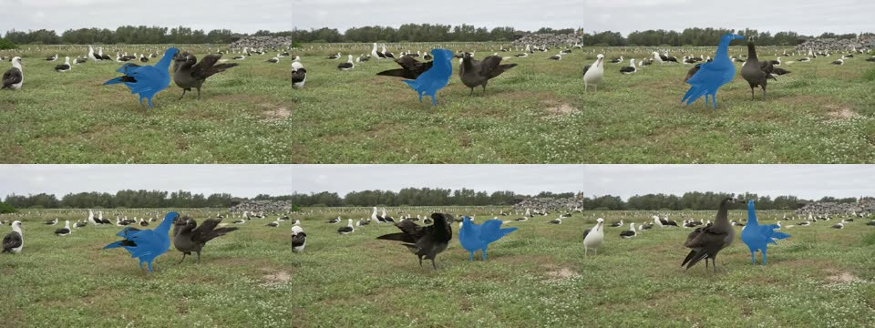
--fix-box, EfficientTAM-S, frames 0, 75 and 299. Top: one point on the left bird in frame 0. Bottom: the same point and --fix-box 75:1:548,172,742,315. The frames before frame 75 do not change. From frame 75, the track follows the right bird.How the correction works:
- The corrected frame becomes a new prompt frame of the object. The model does not use memory on that frame, because memory attention can ignore the clicks.
- For points, the mask of the first run on that frame is an input too. Thus a point adds to or removes from the current mask.
- For a box, the mask of the first run is not an input. The box sets the object again.
- The memory of the object before the corrected frame is removed. Old memory can cancel the correction after some frames.
- The frames before the first corrected frame keep the masks of the first run. The model tracks again from the first corrected frame to the end.
- If all points of one correction are remove points,
track.pyadds one add point on the far side of the mask. Without an add point, SAM removes the full mask. - If all points of one correction are remove points and the mask on that frame is empty,
track.pyignores the correction. There is nothing to remove. - The live app uses the same function for its correction points (7.7).
With corrections, the FPS value includes the two passes. On spark2, a fix at frame 75 of albatross.mp4 gives 44.5 FPS. The value without corrections is approximately 100 FPS.
Add points on a different object can move the track to that object. They do not add the second object to the first. On albatross.mp4, two add points on the right bird move the track of the left bird to the right bird with EfficientTAM-S. EfficientTAM-Ti and SAM2.1 ignore these points and keep the left bird. To track two objects, give two prompts on frame 0.
5.8 Track objects that come into the frame later
With --text, the detector runs on frame 0 only. An object that comes into the frame later has no mask. The option --redetect N runs the detector again every N frames. This procedure is for EfficientTAM only (--model s or ti).
To track objects that come into the frame later, do these steps:
- Find the names of the objects, for example
car . truck. - Run
./run_spark2.sh my.mp4 --text "car . truck" --threshold 0.30 --redetect 15 --out results/my.mp4. - Read the
objects:line of the output. - Open the output video.
- Make sure that new objects get a mask, and that one object does not have two masks.
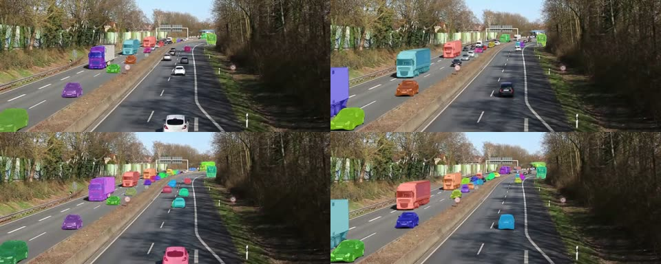
--redetect 15. These cars have masks. Video: "Motorway A40 - on bridge above the traffic" by Kathinka Engels / Sounds of Changes, CC BY 3.0, via Wikimedia Commons. The figure is cropped and has masks added.The sequence for each frame is:
- Detect. On every Nth frame, the detector finds boxes for the names.
- Remove known boxes. The tool ignores a box that has a box IoU of 0.5 or more with the box of a tracked mask.
- Track. Each remaining box becomes a new object on this frame. The tracker runs for all objects.
- Compare the new masks. A new mask is a duplicate if another mask covers 50% or more of the smaller of the two masks. The tool removes the new object. Boxes alone cannot show this: the box of the girl contains the mask of the boy, but she is a different object.
- End tracks. The tool ends a track after 15 frames with an empty mask. It also ends a track when the mask covers 25% or more of the frame. Such a mask is the background, not an object, and the tool does not draw it.
This option is slower than one detection. On the clip of Figure 7, it gives 2.0 FPS for up to 44 objects. One detection gives 3.8 FPS for 19 objects. Most of the time is memory attention for each object. The detector uses only 4.4 of 149 seconds.
An object that goes away for more than 15 frames gets a new number when it comes back. Objects near each other can still join in one mask, for example players in a pile (10.5). An object that fills 25% or more of the frame cannot be tracked with this option. The tool tracks at most 64 objects at a time.
6. Live app procedures
6.1 Start the live app
- Open a terminal on the Mac.
- Go to the project folder:
cd ~/GWorkspace/TrackAnything. - Start the launcher:
./live_spark2.sh --model etam-s. - Wait for the browser to open
http://localhost:8765. - Allow camera access when the browser asks.
- Make sure that the status at the top right shows Live and the model name.
The --model option sets the model at start. You can change the model later in the page. Without --model, the server starts with SAM2.1 small. To use a different port, set PORT=<number>.
Use one browser tab for the live app. The server accepts one viewer at a time. A second tab shows "Busy · retrying" (Figure 21). When a page connects, the server clears the track. A page that you load again thus starts with no objects.
The first start of EfficientTAM compiles the image encoder. The page can show "Connecting" for up to one minute. Do not stop the launcher during this time.
6.2 Track an object
- Point the camera at the object.
- Click the object in the video.
- Make sure that a blue mask covers the object.
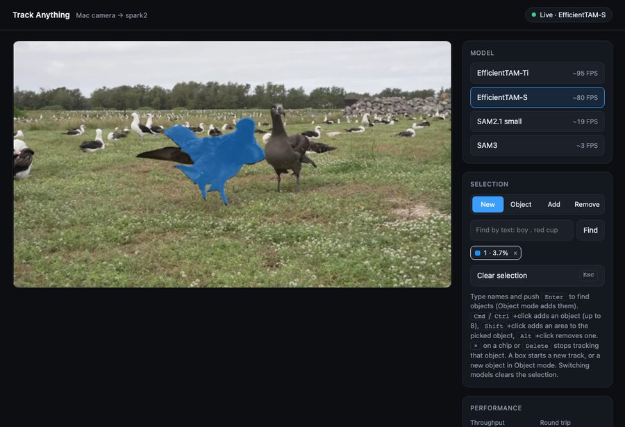
To give a box prompt, do these steps:
- Push and hold the mouse button at one corner of the object.
- Move the pointer to the opposite corner.
- Release the mouse button.
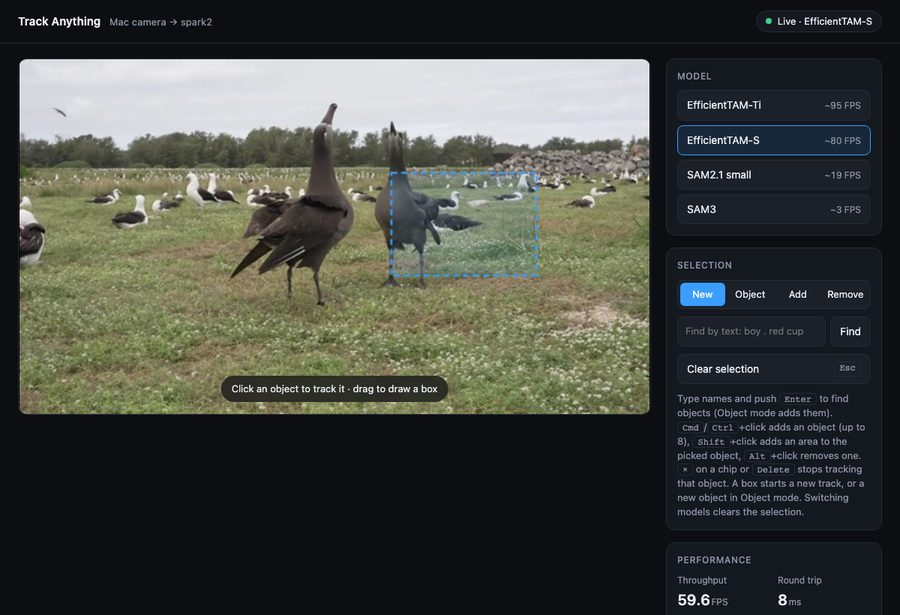
Use a box for objects with parts, for example a person with a shirt. A point on the shirt can give a mask of the shirt only. To correct this type of mask, use correction points (6.3).
6.3 Correct the mask
Use correction points when the mask covers too little or too much of the object. A correction point does not start a new track. The model keeps its memory bank. With more than one object, the correction points change the picked object only (6.4).
To add an area to the mask, do these steps:
- Push and hold Shift.
- Click the area that the mask does not cover.
- Release Shift.
- Make sure that the mask covers the area.
To remove an area from the mask, do these steps:
- Push and hold Alt (Option on a Mac).
- Click the area that the mask must not cover.
- Release Alt.
On a touch screen, there is no Shift key. Use the New, Add and Remove buttons in the Selection panel. The button sets the function of the next clicks. A box always starts a new track.
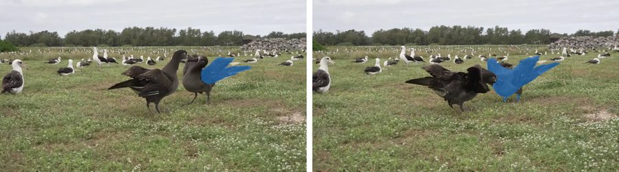
A remove point takes out part of the mask, but the result is not exact. On albatross.mp4, two remove points on a bird left 40% of the bird with EfficientTAM-S, 64% with EfficientTAM-Ti and 6% with SAM2.1. If the mask is wrong after a remove point, start a new track with a box.
A remove point without an add point gives SAM no area to keep. The server then adds one add point. It puts this point on the mask cell that is farthest from the remove points. If this cell is on the wrong area, use an add point on the correct area.
6.4 Track more than one object
The app can track up to 8 objects at the same time. Each object has its own colour and its own chip in the Selection panel. The chip shows the object number and its mask area.
- Select the first object (6.2).
- Push and hold Cmd (Ctrl on Windows and Linux).
- Click the next object.
- Release Cmd.
- Make sure that a mask with a new colour covers the object.
To use a box for the next object, click Object in the Selection panel. Then drag the box. Click New to go back to the usual function.
The new object becomes the picked object. To correct a different object, do these steps:
- Click the chip of the object.
- Use correction points (6.3).
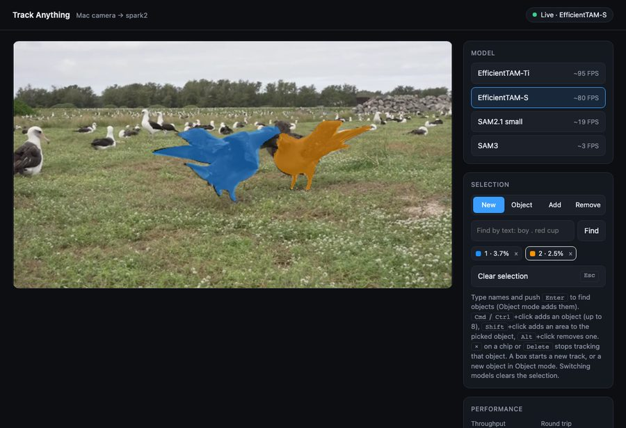
Each object adds time to each frame. The image encoder runs one time for all objects. Memory attention and the mask decoder run one time for each object. See 10.3.
A click or a box in New mode starts a new track and removes all objects. Clear selection also removes all objects.
To stop the tracking of one object, do one of these steps:
- Click × on the chip of the object.
- Click the chip of the object. Then push Delete or Backspace.
The server removes the object before the next frame. The other objects continue to track with the same masks, numbers and colours. If you remove the last object, the track ends.
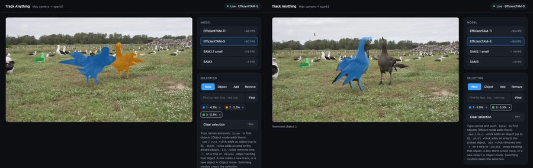
When two masks cover the same pixel, the page shows the object with the higher logit.
6.5 Find objects by text
You can type the names of the objects. The detector finds them in the next frame. Each box that it finds becomes one object, and the tracker follows each object from that frame on.
- Click the Find field in the Selection panel.
- Type one or more names. Separate the names with a dot, for example
dark bird . rocks. - Push Enter, or click Find.
- Wait for the message below the video, for example "Found 2: dark bird 0.67, dark bird 0.52". The page accepts the next query only after this message.
- Make sure that each mask covers the correct object. The chips show the labels.
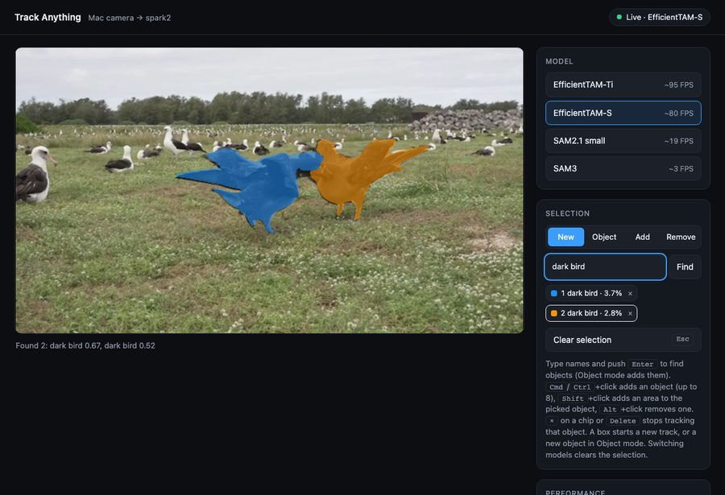
dark bird in New mode with EfficientTAM-S. The detector found two boxes (scores 0.67 and 0.52). The chips show the label.To add objects by text to the current track, do these steps:
- Click Object in the Selection panel.
- Type the names in the Find field.
- Push Enter.
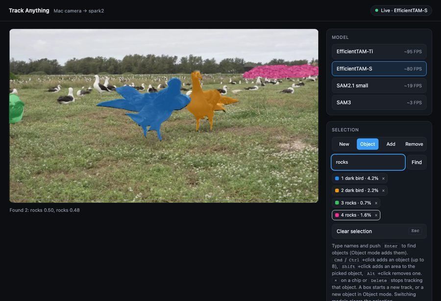
rocks in Object mode adds objects 3 and 4. The two birds stay objects 1 and 2. Object 4 is the rock pile. Object 3 is a white bird: the detector gave it the wrong label (score 0.50). If the detector gives the label to a bird that is already tracked, the server ignores that box.| Mode | Result of a query |
|---|---|
| New (and Add, Remove) | A new track starts with all found objects. If the detector finds nothing, the current track stays. |
| Object | The found objects are added to the current track, up to 8 objects in total. The server ignores a box that overlaps a tracked object (box IoU 0.5 or more). |
Query rules:
- Use simple nouns in lower case, for example
cup,personorred cup. - Each found box is one object. The query
dark birdfinds each dark bird in the frame. - The maximum length is 200 characters. The server uses the first 16 names.
The first query loads the detector. It takes approximately 5 seconds. Each query after that takes approximately 0.2 seconds (10.4).
The detector runs one time for each query. It does not find an object that comes into view later. To find it, send the query again in Object mode.
A box with a low score can be a different object. Look at the score in the message and at the masks. If a mask is on the wrong object, push Esc and select the object with a box, or use correction points (6.3).
If the detector finds nothing, the message is "Nothing found for ...". Use one simple name and try again.
6.6 Clear the selection
- Push Esc, or click Clear selection.
All masks and object chips go away. The hint "Click an object to track it" comes back.
6.7 Change the model
- Click a model in the Model panel.
- Wait until the loading overlay goes away.
- Read the message below the video.
- Select the object again.
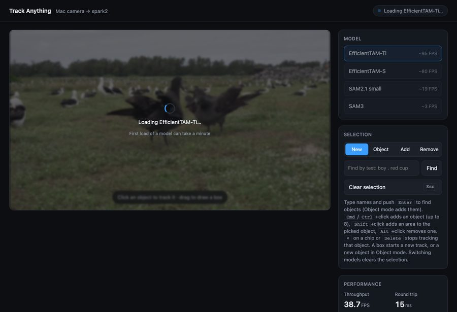
The server keeps each loaded model in GPU memory. A second change to the same model is immediate. A model change clears the selection.
SAM3 needs HF_TOKEN. If the token is missing or has no access, the load fails. The page then shows the error and keeps the current model.
6.8 Read the performance panel
| Field | Meaning |
|---|---|
| Throughput | Replies per second, averaged over 10 replies. The camera frame rate limits this value. |
| Round trip | Time from frame send to the reply, in milliseconds. It includes the network and the server. |
| Server | Time on spark2 for one frame: decode, model and pack. |
| Mask | Total mask area of all objects, as a percentage of the mask grid. "–" means no selection. The chips show the area of each object. |
6.9 Use the page on a narrow screen
Below a width of 880 px, the panels move below the video. The page has no horizontal scroll at 390 px.
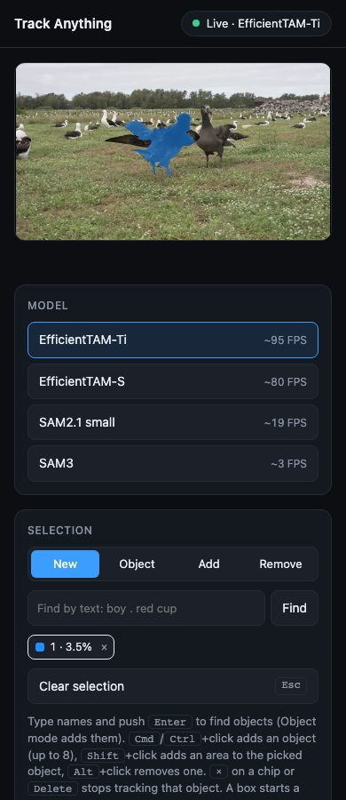
6.10 Stop the live app
- Push Ctrl+C in the launcher terminal.
As an alternative, run pkill -f live_spark2.sh in a different terminal. Both methods stop the SSH tunnel and the server on spark2.
To make sure that the server stopped, run this command:
ssh spark2 'pgrep -af live.py || echo stopped'7. How tracking works
The models do not detect objects and then match them between frames. They do segmentation with memory. For each new frame, the model finds the object that it remembers and marks its pixels. EfficientTAM, SAM2.1 and SAM3 all use this method.
7.1 Sequence for each frame
- Image encoder. The encoder changes the frame into a grid of features. This step uses most of the compute. EfficientTAM uses a plain ViT-S or ViT-Ti at 512 × 512. SAM2.1 uses Hiera at 1024 × 1024. SAM3 uses its own, larger encoder at 1008 × 1008.
- Prompt. On the prompt frame, the mask decoder uses your point or box, or a box from the detector (7.6), to make the first mask. The model puts this result in the memory bank as the prompt frame. The prompt frame stays in the memory bank for the full track.
- Memory attention. On each frame after the prompt frame, there is no prompt. The features of the current frame attend to the memory bank. The memory bank contains the prompt frame, up to 6 recent frames with their masks and up to 16 object pointers. An object pointer is a short summary of the appearance of the object.
- Mask decoder. The decoder makes the logits of the mask grid. It also makes an object score. The object score tells if the object is in the frame.
- Memory encoder. The encoder combines the new mask with the frame features. The result goes into the memory bank. The next frame uses it.
7.2 Occlusion
If the object score tells that the object is not in the frame, the model sets all logits below 0. The mask is then empty. When the object comes back, the model finds it again if the memory bank still agrees with its appearance.
7.3 Model differences
| Model | Image encoder | Input size | Mask grid | Source |
|---|---|---|---|---|
| EfficientTAM-Ti | ViT-Ti (plain, non-hierarchical) | 512 × 512 | 128 × 128 | yformer/EfficientTAM @ abcd061 |
| EfficientTAM-S | ViT-S (plain, non-hierarchical) | 512 × 512 | 128 × 128 | yformer/EfficientTAM @ abcd061 |
| SAM2.1 small | Hiera-S (hierarchical) | 1024 × 1024 | 256 × 256 | facebook/sam2.1-hiera-small (transformers) |
| SAM3 | SAM3 vision backbone | 1008 × 1008 | 288 × 288 | facebook/sam3 (transformers, gated) |
EfficientTAM keeps the SAM2 design. It changes two parts. First, it uses a small plain ViT as the image encoder. Second, it makes memory attention less expensive: it pools the spatial memory into fewer tokens. On spark2, these changes make EfficientTAM-S approximately 4 times faster than SAM2.1 small in the live app. SAM3 also uses the SAM2 tracking design, with a much larger encoder. SAM3 has 466 million parameters in the tracker.
7.4 Implementation in live.py
- One frame at a time. SAM2.1 and SAM3 use the streaming video session of Hugging Face transformers (
Sam2VideoModel,Sam3TrackerVideoModel). EfficientTAM has an offline video API only. For this reason,EfficientTAMTrackeradds each frame to the video state. It then runspropagate_in_videoon that one frame only (num_frames = t + 1andmax_frame_num_to_track = 0). - New prompt, new track. A click or a box starts a new track. The next frame becomes the prompt frame.
- Correction points. The server puts correction points on the last frame that it tracked. It runs that frame again as a new prompt frame, without the memory bank. The current mask logits go into the mask decoder with the points. This is the interactive refinement that SAM is trained for. Then the server removes the older frames from the memory bank, but it keeps the prompt frames. Without these two steps, the memory bank ignores the points, or replaces the correction after a few frames. SAM2.1 kept a mask of 1.8% of the frame when it received two add points on a tracked frame. The function
as_cond_frame()does these steps for the live app and fortrack.py --fix(7.7). - Hugging Face gap. The
forward()function of the Hugging Face video models has no input for the current mask logits.Trackeradds them for the correction call only (prev_sam_mask_logits). The EfficientTAM predictor adds them itself. - Limited history. The function
prune()removes frames older than 16 from the state. The prompt frame stays. The model reads only the recent frames, so this change has no effect on the result. Without corrections, memory use and latency stay constant for any track length. Each correction adds one prompt frame that stays (7.5). - More than one object. The server numbers the objects in the order that you add them, with a maximum of 8 at a time. Both upstream sessions accept a new object on a later frame. That frame becomes the prompt frame of the new object, and the other objects continue to track. The image encoder runs one time for each frame. Memory attention and the mask decoder run for each object. Clear selection and a model change end the track.
- Hugging Face gap for objects. Each call of
add_inputs_to_inference_sessionreplaces the list of objects with new inputs. When you add two objects on the same frame, the first object then has no prompt frame, and the model stops with an error.Tracker.stepsets the full list after it adds all new objects. - Remove one object. The server removes the object in the worker, before the next frame. It deletes the inputs, outputs and memory of the object from the session. Then it moves the later objects down by one position (
drop_index()). The upstream functionremove_object()of EfficientTAM does not work here. It runs the prompt frames of the object again, andprune()has already removed those images. The Hugging Face session has no removal function, so the server uses the same method for both trackers. The page gives each new object the first free colour of the 8 colours. The object keeps that colour until it goes away, so two active objects never have the same colour. - Warm-up. At start,
EfficientTAMTrackerruns three black frames. This step compiles the image encoder before your first click.
7.5 Limits of the tracking method
- No new detection. The model knows the object only from its memory bank. A large change of appearance or a long absence can cause the track to drift or stop. In this condition, select the object again. The detector of 7.6 also runs one time only, for each query.
- Prompt quality. A box usually gives a better first mask than a point. This is true for objects with parts. Correction points (6.3) can repair a point prompt.
- Each correction adds a prompt frame. The server keeps all prompt frames, and the model reads all of them. Many corrections in one track make each frame slower. Start a new track after many corrections.
- Flat surfaces. On areas with little texture, the mask can spread into the background.
7.6 How text prompts work
The trackers of 7.1 do not read text. A separate detector changes the query into boxes. The boxes then go to the tracker as box prompts. This method has the name "detect, then track". Grounded-SAM-2 uses the same method.
- Detector. The detector is in
detector.py. The server sends the frame and the names to the detector. The detector is LLMDet tiny: a Swin-T image backbone, a BERT text encoder and the MM Grounding DINO head (MMGroundingDinoForObjectDetection). It resizes the frame to 800 px on the short side. It runs in bf16 on the GPU. - Boxes. The server keeps the boxes with a score of 0.35 or more and a text score of 0.25 or more. Non-maximum suppression (IoU 0.7) removes two boxes on the same thing, also with different labels. In Object mode, the server also removes boxes that overlap a tracked object (IoU 0.5 or more with the box of its current mask). Then it keeps the best boxes, up to the limit of 8 objects.
- Tracker. Each box becomes the box prompt of one new object. All of these objects get the same prompt frame. From the next frame, the tracker works as in 7.1. The speed is the speed of the tracker for that number of objects (10.3).
Reasons for this method:
- Speed. The detector takes approximately 0.2 s. If it ran on each frame, the live app would run at less than 5 FPS. With one detection, the app keeps the speed of the tracker, for example 57 FPS for two objects with EfficientTAM-S.
- Stable identity. The tracker keeps each object as one object through the video. A detector on each frame must match its boxes between frames again.
- Same tracker. The boxes use the same path as a box that you drag. Correction points and the other functions work on found objects too.
SAM3 can also take text. It detects and tracks in one model. But SAM3 runs at approximately 3 FPS in the live app. As a detector, its image model takes approximately 1 s for one frame with three names on spark2 (10.4). For this reason, the live app uses a small detector with the fast trackers.
Threshold values are in live.py: BOX_THRESHOLD = 0.35, TEXT_THRESHOLD = 0.25, NMS_IOU = 0.7, DUP_IOU = 0.5. With 0.30, the detector found a "giraffe" with a score of 0.31 on a test image without a giraffe. A boy that was half hidden still had a score of 0.39.
7.7 Correction step in detail
The live app (6.3) and track.py --fix (5.7) use one function for a correction: as_cond_frame() in live.py. Thus the two tools change the tracker state in the same way. Figure 19 shows the frames of one object. The steps below agree with the function.
- Read the current mask. The function reads the logits of the object on frame f. The live app uses the last tracked frame as f.
track.pyuses the frame in the--fixoption. - Add a keep point. If all points are remove points, the function adds one add point (
anchor()). It puts this point on the mask cell that is farthest from the remove points. - Stop on an empty mask. If all points are remove points and the mask is empty, there is nothing to remove. The function stops. The tracker state does not change.
- Make f a prompt frame. The function removes f from the tracked frames of the object. The model then does not use memory attention on f. Memory attention can ignore the clicks.
- Delete the older memory. The function deletes the outputs of the object on the frames before f. The prompt frames stay. Without this step, the older memory cancels the correction after some frames. The output of frame f stays, because the model uses it in step 6.
- Run f again. The caller runs frame f with the points. The old logits of f go into the mask decoder with the points. Thus the points add to or remove from the current mask.
- Continue. The live app continues with the next camera frame.
track.pytracks again from the first corrected frame to the end.
| Item | Live app | track.py --fix |
|---|---|---|
| Frame f | The last tracked frame. | The frame in the option. |
| Point position | 0 to 1, from the page. | Pixels. track.py changes them to 0 to 1 for the function, and back to pixels for the model. |
| Old logits of f | SAM2.1 and SAM3: the server adds them to the call (prev_sam_mask_logits). EfficientTAM: the upstream predictor reads them. | The upstream predictor reads them. |
| Box | Not available. A box starts a new track. | --fix-box. track.py also deletes the output of f, so the old mask cannot change the box. |
| After step 6 | The server deletes the old output of f. Frame f is a prompt frame now. | The second pass writes new outputs. |
Make a change to the correction method in as_cond_frame() only. tests/test_tracker.py tests the live app. tests/test_fix.py tests track.py. Run both after a change (5.6).
8. Live data path
This sequence occurs for each frame:
- The page draws the current camera image into a canvas. The maximum width is 640 px. The canvas keeps the aspect ratio of the camera.
- The page encodes the canvas as JPEG with quality 0.7.
- The page sends the JPEG as one binary WebSocket message.
- The server decodes the JPEG on the GPU with nvJPEG (
torchvision.io.decode_jpeg(device="cuda")). The frame stays in GPU memory. - If a query waits, the detector finds the boxes in this frame. Each box becomes the prompt of a new object (7.6). This step occurs one time for each query.
- The tracker resizes the frame on the GPU and runs one step. For EfficientTAM, the resize is antialiased bicubic.
- The server sends a JSON message with the time, the mask area of each object and the grid size. After a query, the message also has the labels and scores of the found boxes.
- The server sends the logits of the mask grid as raw float16 in a second, binary message.
- When the JSON message arrives, the page sends the next frame. Only one frame is in transit at a time, so no queue builds up.
- The page loads the logits into a WebGL2
R16Ftexture. - A fragment shader upsamples the texture bilinearly, keeps the pixels with a logit above 0 and colours them blue.
The page draws the mask on the live video. The mask therefore comes from a frame that is one round trip older than the image below it.
8.1 Why raw logits
The server sends the small mask grid. It does not send a full-size mask image. This design removes the PNG encode on spark2 and the image decode in the browser. The shader does the same bilinear upsample that the server did before (F.interpolate(..., align_corners=False)). The result is the same mask: the IoU is 1.0 over 100 frames for EfficientTAM-S and for SAM2.1. An earlier test with uint8 logits moved the mask edges (IoU 0.91). For this reason, the format is float16.
| Model | Mask grid | Bytes per reply |
|---|---|---|
| EfficientTAM-Ti / S | 128 × 128 | 32 KiB |
| SAM2.1 small | 256 × 256 | 128 KiB |
| SAM3 | 288 × 288 | 162 KiB |
A camera frame is approximately 29 KiB as JPEG.
9. WebSocket messages
The page connects to ws://localhost:8765/ws. Coordinates are relative to the frame: 0 is the left or top edge, 1 is the right or bottom edge.
9.1 Page to server
| Message | Type | Function |
|---|---|---|
| JPEG bytes | binary | One camera frame. |
{"x": 0.42, "y": 0.61} | text | Point prompt. |
{"box": [x0, y0, x1, y1]} | text | Box prompt. |
{"x": 0.42, "y": 0.61, "obj": "new"}{"box": [...], "obj": "new"} | text | Add one more object. Without a track, it starts a track. The server ignores it after 8 objects. |
{"x": 0.42, "y": 0.2, "add": 1} | text | Correction point on object k (default 1): 1 adds, 0 removes. The full message is {"x", "y", "add", "obj": k}. The server applies it before the next frame and ignores an unknown k. Without a track, an add point starts a track, and the server ignores a remove point. |
{"text": "dark bird . rocks"}{"text": "cup", "obj": "new"} | text | Query, with an optional number "id" that the reply sends back. The detector runs on the next frame. Without "obj": "new", the found boxes start a new track. With it, they are added to the current track. The text must be a string of 200 characters or less. The query runs on one frame only, also if that frame fails. A model change, a new prompt, a clear or a new query (also one that is not valid) before that frame cancels the query. A correction point does not cancel it. |
{"remove": 2} | text | Stop the tracking of object 2. The other objects continue. The server ignores an unknown number. It does not cancel a query. |
{} | text | Clear the selection. |
{"model": "etam-ti"} | text | Change the model. Valid values: etam-ti, etam-s, sam2, sam3, and the --model value at start. |
The server checks each text message before it uses it. Coordinates must be numbers. A box must have 4 numbers. obj and remove must be whole numbers of 1 or more (or "new" for obj). The model must be a string. The server answers a message that is not valid with {"message_error": "bad message: ..."} and keeps the connection (9.3).
When the server accepts a viewer, it clears the track. A page that loads again starts without objects.
9.2 Server to page
| Message | When |
|---|---|
{"models": [{"id", "label", "hint"}, ...], "model": "etam-s"} | On connection. It gives the model list and the active model. |
{"ms": 10.9, "areas": [0.022, 0.061], "labels": ["", "cup"], "ids": [1, 3], "w": 128, "h": 128} | After each frame with a selection. areas has one value for each object, in object order. ids has the object number of each grid. labels has the detector label of each object, or an empty string for an object from a click or a box. A binary message follows it: one w × h grid of float16 logits for each object, one after the other. |
{"ms": 0.9, "areas": [], "labels": [], "ids": []} | After each frame without a selection. No binary message follows it. |
{"ms": 205.3, "areas": [...], "w": 128, "h": 128, "found": [{"label": "dark bird", "score": 0.67}, {"label": "dark bird", "score": 0.52}]} | After the frame on which the detector ran. found lists the new objects in object order. "found": [] means that the query added no object. The detector found nothing, or in Object mode all boxes covered tracked objects or no object was free. find_id is the id of the query. If the detector failed on that frame, the message also has "find_error", and tracking continues. |
{"find_error": "..."} | After a query that is not valid (not a string, too long, no names), or when the detector cannot load. The message has the find_id of the query. The current track stays. |
{"model": "etam-ti"} | After a model change. |
{"model": "etam-s", "error": "..."} | After a failed model change. The value of model is the model that stays active. |
| HTTP 403 | On connection from a page of a different site (its Origin is not localhost or 127.0.0.1). Browsers let any site open a WebSocket to localhost. This check stops other sites from using the tracker. |
{"message_error": "bad message: ..."} | After a text message that is not valid (9.1). This message is not a reply to a frame. The page shows the text and does not send a frame for it. |
{"error": "tracking failed, track cleared: ...", "find_id": 3} | After a frame on which the tracker failed. The server clears the track, because the failure can leave the track half changed. Select the object again. |
Close with code 4001 | On connection, when a different viewer is connected. The page tries again every 2 seconds. |
{"error": "bad frame: ...", "find_id": 3} | After a frame that nvJPEG cannot decode. The next good frame works normally. If a query was to run on that frame, the query is lost, and find_id is its id. |
The detector ID is fixed in live.py (DETECTOR). Do not take a detector ID from a message. A page could then make spark2 download any repository.
The server accepts only the model IDs in its list. Do not add code that loads a model ID from a message without a check. Such code lets a page make spark2 download any repository.
9.3 Checks on the connection
The server checks each connection, each text message and each frame. Figure 20 shows the checks. The expected clients are the page on the Mac and the tests on spark2.
| No. | Check | Code | Result for the page | Reason |
|---|---|---|---|---|
| 1 | The Origin header is localhost or 127.0.0.1, or there is no header. | ws_handler() | Other origin: HTTP 403. The browser shows the close code 1006. | A browser lets a page of any site open a WebSocket to localhost. Without this check, a different site in the same browser can send frames, load models and take the viewer slot. It cannot see the camera. |
| 2 | No other viewer is connected. | ws_handler() | Close code 4001. The page shows "Busy · retrying" and tries again every 2 seconds (Figure 21). | All viewers use one shared tracker. A second viewer changes the track of the first viewer. |
| 3 | None. The server clears the track of the active model. | ws_handler() | The page starts with no objects. | Without this step, a page that loads again receives the objects of the last viewer. |
| 4 | Each field has the correct type (9.1). | valid() | {"message_error": "bad message: ..."}. The connection stays (Figure 22). | A field with a wrong type caused an exception. The exception closed the connection, and the page showed "spark2 offline". |
| 5 | nvJPEG can decode the frame. | step(), BadFrame | {"error": "bad frame: ..."}. The track stays. | One bad frame does not change the track. The next good frame works normally. |
| 6 | The detector, the tracker and the packing do not fail. | serve() | {"error": "tracking failed, track cleared: ..."}. The track is empty. | A failure can leave the track half changed. Then the next frames fail too. A clear track stops this. |
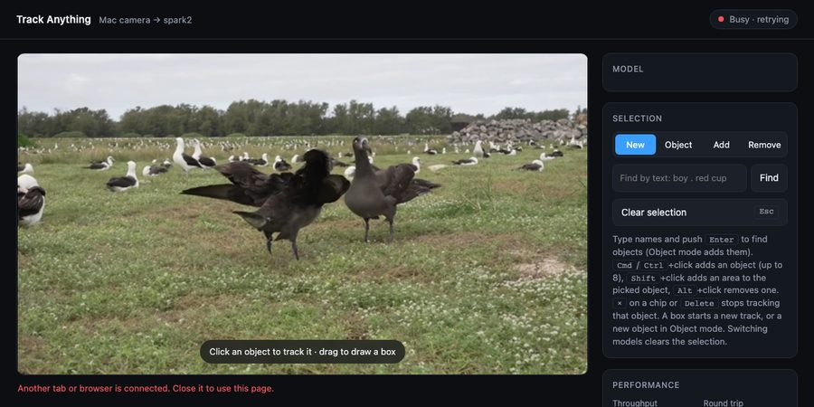
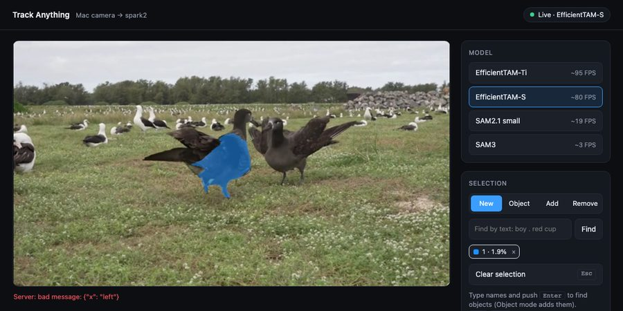
{"x": "left"} was sent from the browser console. The notice shows the message. Tracking continues.To do a check of the connection protection, do these steps:
- Run
./test_spark2.sh -k test_ws. - Make sure that the output shows
OK.
These tests in tests/test_ws.py cover the checks: test_other_sites_are_refused (1), test_second_viewer_is_refused (2), test_new_viewer_starts_clean (3), test_bad_messages_are_answered (4), test_bad_frame_consumes_the_query (5) and test_tracking_failure_clears_the_track (6).
A connection without an Origin header passes check 1. A browser always sends this header. Scripts and the tests do not send it. The server has no password. The bind to 127.0.0.1 and the SSH tunnel limit the access to spark2 and the Mac.
Do not remove the origin check. Do not bind the server to 0.0.0.0. Each change lets other people or other sites use the GPU and the tracker.
10. Performance
10.1 Offline benchmark
Conditions: 2026-11-04, spark2 GB10, torch 2.14.1+cu130, albatross.mp4 (300 frames, 960 × 540), one object (--point 470,260).
| Model | FPS (runs 0, 1, 2) | Peak GPU memory |
|---|---|---|
| EfficientTAM-S 512 | 94.3 / 78.5 / 102.9 | 1282 MiB |
| EfficientTAM-Ti 512 | 111.0 / 93.6 / 112.3 | 1218 MiB |
| SAM3 tracker (1008, bf16) | 2.7 / 2.7 / 2.7 | 9344 MiB |
On garbage_cans.mp4 (321 frames, 720 × 1280), EfficientTAM-S runs at 102–105 FPS with one object and at 61.8 FPS with two objects in one run. SAM3 runs at 2.7 FPS with one object and at 2.4 FPS with two (5.4).
On albatross.mp4, EfficientTAM-S runs at 54.9 FPS with two birds in one run. SAM3 runs at approximately 1/38 of the speed of EfficientTAM-S. It gives a better mask: it keeps the spread wing of the bird, and EfficientTAM-S loses part of it in some frames (mask area 3.4% to 4.3% against 2.1% to 3.6%). The SAM3 image encoder alone takes approximately 300 ms for each 1008 × 1008 frame (eager PyTorch, SDPA, not compiled).
10.2 Live app
Conditions: 2026-11-04, test client on spark2, 640 × 360 JPEG frames from albatross.mp4 forward and back, 600 frames, one object with a new box at frame 200. These values do not include the network between the Mac and spark2.
| Model | Throughput | Round trip (median) |
|---|---|---|
| EfficientTAM-Ti 512 | 93.0 FPS | 9.7 ms |
| EfficientTAM-S 512 | 83.4 FPS | 10.9 ms |
| SAM2.1 small | 19.2 FPS | 50.7 ms |
| SAM3 tracker | 2.9 FPS | 341 ms |
The round trip stays constant over 600 frames for all models. In the browser, the camera frame rate (usually 30 FPS) limits the throughput.
SAM2.1 small uses approximately 50 ms for each frame. In an earlier measurement, preprocessing took 2 ms and the image encoder took 21 ms. Memory attention, the mask decoder and overhead use the remaining time. SAM2.1 tiny is not faster (47.8 ms).
10.3 More than one object
Conditions: 2026-11-04, step() of the tracker and copy to the CPU on spark2, 640 × 360 frames from albatross.mp4, 100 frames after one warm-up pass. Objects: the two dark birds and two birds behind them. These values do not include JPEG decode or the network.
| Model | 1 object | 2 objects | 4 objects |
|---|---|---|---|
| EfficientTAM-Ti 512 | 118.7 FPS | 68.2 FPS | 36.6 FPS |
| EfficientTAM-S 512 | 101.6 FPS | 62.1 FPS | 34.5 FPS |
| SAM2.1 small | 20.6 FPS | 13.3 FPS | 7.7 FPS |
Each added object costs approximately as much time as the first object costs without the image encoder. For EfficientTAM, the image encoder is small, so the time grows almost in proportion to the number of objects.
10.4 Detector
Bake-off conditions: 2026-11-04, frames 0, 75 and 150 of albatross.mp4 at 640 × 360, the names albatross and rocks, and three objects: the two dark birds and the rock pile. The reference box of each object comes from its EfficientTAM-S track. IoU is the best box with the correct label against the reference box, averaged over the 9 pairs of object and frame. On frame 150, all detectors give IoU 0.60 or 0.61 for the right bird, so this value probably comes from the reference box. It lowers all averages. Latency is the median of 20 runs after 3 warm-up runs. All models run with Hugging Face transformers 5.22.1 and torch 2.14.1 + cu130.
| Detector | Licence | LVIS minival AP (published) | IoU on albatross | bf16 | fp32 | Peak GPU memory | Host |
|---|---|---|---|---|---|---|---|
| Grounding DINO tiny | Apache-2.0 | – | 0.846 | 207 ms | 267 ms | 1.9 GB | spark3 |
| MM Grounding DINO tiny | Apache-2.0 | 41.4 | 0.868 | 207 ms | 269 ms | 1.9 GB | spark3 |
| LLMDet tiny (used) | Apache-2.0 | 50.7 | 0.866 | 208 ms | 269 ms | 1.9 GB | spark3 |
| LLMDet base | Apache-2.0 | 54.3 | 0.878 | 243 ms | 332 ms | 2.1 GB | spark3 |
| OmDet-Turbo tiny | Apache-2.0, needs timm | – | 0.540 | 33 ms | 42 ms | 0.6 GB | spark3 |
| SAM3 image model (reference) | SAM licence, gated | – | 0.894 | 685 ms | – | 2.0 GB | spark2 |
All detectors except OmDet-Turbo find the three objects with almost the same boxes. OmDet-Turbo does not find rocks, and this gives its low IoU. LLMDet tiny has the widest vocabulary of the small models (LVIS minival AP 50.7), and it needs no new dependency. For this reason, the live app uses it. OmDet-Turbo is 6.3 times faster, but it needs the timm package and has a smaller vocabulary. Because the detector runs one time for each query, 0.2 s is acceptable. SAM3 gives the highest IoU, but it takes 0.7 s for two names and needs HF_TOKEN. Each SAM3 call takes one name, so the time is for three calls.
The published AP values come from the model cards. "–" means that the model card gives no LVIS minival value in the same form. spark2 and spark3 are the same type of host (GB10).
End to end, LLMDet tiny + EfficientTAM-S, query dark bird (finds the two dark birds) | Value | Host |
|---|---|---|
| First query: detector load and first pass | 5.7 s | spark2 |
| Time from query to first mask, later queries (WebSocket client) | 232–243 ms | spark2 |
| Server time of the detection frame (decode, detect, track, pack) | 231–242 ms | spark2 |
| Round trip after the query, two objects | 17.3–17.4 ms (57–58 FPS) | spark2 |
| Masks from the query against masks from reference boxes (IoU, 100 frames) | EfficientTAM-S: left 0.999, right 0.994. SAM2.1: left 0.991, right 0.958. | spark3 (EfficientTAM-S), spark2 (SAM2.1) |
10.5 Crowd test: 22 players
This smoke test checks the limits of the method. The clip is an overhead view of a team-sport play (3456 × 2234, 424 frames with content). The test resizes the frames to 1280 × 827. The camera zooms in during the play, and the players make a dense pile at the line. The test ran offline with scratch scripts, outside the live app. The limit of 8 objects does not apply to these scripts. The manual has no images of the clip, because the clip is third-party material.
| Step | Result | Host |
|---|---|---|
Detector, query player, frame 0 | 20 of 22 at a score of 0.35 or more; 22 of 22 at 0.30. At 0.25: 23 boxes (a false box). The query person is worse. | spark3 |
| Detection time | 0.4–0.8 s, one time | spark2, spark3 |
| Method (22 players) | Speed | Objects at the end | Identity | Host |
|---|---|---|---|---|
| SAM2.1 small, detect one time, then track | 1.6 FPS | 20 masks | 2 jumps above 40 px. The 2 lost players went out of the frame during the zoom. In the pile, some tracks move to a different player. | spark2 |
| EfficientTAM-S, detect one time, then track | 6.8 FPS | 19 masks | 18 jumps. Masks join on players in the pile. | spark3 |
| SAM2.1 + detector every 15 frames + Hungarian match on box IoU (prototype) | 1.3 FPS | 29 masks for approximately 22 players | Duplicate masks: in the pile, the box of a mask often has an IoU below 0.3 with the detector box of the same player. | spark2 |
EfficientTAM-S + detector every 15 frames + comparison of the new masks + end of stopped tracks (--redetect 15, 5.8). Query for players, threshold 0.30, 243 frames at 1280 × 718. | 2.8 FPS | 27 objects in all | 78 duplicates and 5 background masks removed. Masks still join in the pile. Jumps not measured. | spark2 |
| YOLO26m + ByteTrack (comparison only) | 70.8 FPS | 13 boxes | 66 track IDs for 22 players | spark3 |
| YOLO26m + BoT-SORT (comparison only) | 58.2 FPS | 15 boxes | 65 track IDs | spark3 |
| YOLO26m + BoT-SORT with re-identification (comparison only) | 56.0 FPS | 14 boxes | 81 track IDs | spark3 |
Results:
- The detector finds all players on the first frame when the box threshold is 0.30.
- Mask tracking keeps the identity of most players, but its time grows with each object. 22 objects are too many for the live app.
- The prototype with periodic detection added duplicates, because it matched on box IoU.
track.py --redetectcompares the new masks and ends stopped tracks (5.8). It is not in the live app: the detector stops the frame loop for approximately 0.2 s each time, and more objects make each frame slower. - YOLO with ByteTrack or BoT-SORT runs in real time, but it gives boxes only and breaks the identity of each player approximately 3 times. This project does not use YOLO (14.3).
11. Troubleshooting
| Symptom | Possible cause | Action |
|---|---|---|
| Status shows "Camera blocked". | The browser did not get camera permission. | Allow the camera in the browser settings for localhost:8765. Load the page again. |
| Status shows "Camera unavailable". | The page does not come from localhost. | Open http://localhost:8765. Do not use the IP address of spark2. |
| Status shows "spark2 offline · retrying". | The server or the tunnel is not running. | Start the launcher (6.1). The page connects again automatically. |
| Message "Server: bad message: ...". | The page sent a text message with a wrong type. This can occur after a change to live.html. | Read the message in the notice. Correct the page code (9.1, 9.3). |
| A WebSocket client gets HTTP 403. | The client sent the Origin of a different site. | Open the page from http://localhost:8765. In a script, do not send an Origin header (9.3). |
| The personal data removal shows "pixelated 0 boxes". | The detector found no plate, number or face on the subject, or the pixelation step did not run. | Look at the review sheet. If the subject has text or a face, do not use the video (5.5). |
| Message "Server: tracking failed, track cleared". | The tracker failed on a frame. The server cleared the track. | Select the object again. If the message comes back, send the text of the message to the developer. |
| Status shows "Busy · retrying". | A different tab or browser is connected to the server. | Close the other tab. This page then connects automatically. |
| Status stays at "Connecting" for a long time. | The server compiles EfficientTAM at start. | Wait up to one minute. |
| The launcher stops with a port error. | A different program uses port 8765 on the Mac. | Start with PORT=8770 ./live_spark2.sh. |
| Message "cannot load SAM3". | HF_TOKEN is missing or has no access to facebook/sam3. | Set HF_TOKEN in the terminal. Start the launcher again. |
| Message "WebGL2 unavailable". | The browser does not support WebGL2, or it is disabled. | Use a current version of Chrome or Safari. |
| The mask spreads into the background or goes to a different object. | The memory bank lost the object (7.5). | Use a remove point on the wrong area (6.3). If the mask stays wrong, push Esc and select the object again with a box. |
| Message "Nothing found for ...". | No box has a score of 0.35 or more. | Use one simple noun, for example cup. Make sure that the object is visible and not too small. |
| A query finds the wrong object. | A different object looks like the name (low score). | Push Esc. Select the object with a box, or use Object mode with a box. You can also use correction points (6.3). |
| The first query takes approximately 5 seconds. | The server loads the detector at the first query. | Wait. The next queries take approximately 0.2 seconds. |
On a new host, torch.compile stops with Python.h: No such file or directory. | The system Python has no development headers (spark3). | Do not install system packages. Run uv python install 3.12, then UV_PYTHON_PREFERENCE=only-managed uv sync --python 3.12 on that host. |
On a new host, torch.compile stops with PermissionError in ~/.triton/cache. | A different process made the cache as root (spark3). | Do not change the root files. Set TRITON_CACHE_DIR=$HOME/.cache/triton-trackanything for the run. |
track.py stops with "nothing found for ...". | The detector found no box with a score of --threshold or more on frame 0. | Use a simple noun, or give a lower --threshold, for example 0.30. |
| The personal data removal stops with "subject ... not found on frame 0". | The subject is not visible on frame 0, or its score is low. | Use a different name, or give a lower --subject-threshold. Cut the clip so that frame 0 shows the subject. |
| The output shows "tags left:" with tags. | The encoder kept metadata. | Do not use the video. Report the tags. |
| An object has frames with "no detection of its own". | The detector found no text or face on the object in these frames. | If the object has no text, this is correct. Else, look at these frames in the video. |
| Message "WARNING: could not confirm cleanup". | The launcher could not delete the private directory on spark2. | Delete the directory that the message shows. Else, a timer deletes it after 6 hours. |
| Message "needs ffmpeg". | The tool ran without the launcher, and the host has no ffmpeg. | Use anonymize_spark2.sh, or run the tool with uv run --with imageio-ffmpeg. |
| The mask is empty while the object is visible. | The object score is below the limit after an occlusion. | Select the object again. |
12. Files
| File | Contents |
|---|---|
track.py | Offline benchmark: points, boxes and text on frame 0, one or more objects, and corrections on later frames (correct(), which uses as_cond_frame() of live.py). It also has load_efficienttam(), which live.py and tools/anonymize.py use. |
live.py | Live server: decode(), pack(), prune(), Prompted (with add_boxes() and fix()), as_cond_frame() and anchor() (correction step, 7.7), Tracker, EfficientTAMTracker, mask_boxes(), valid() and parse_query() (message checks), switch(), step() with BadFrame, ws_handler() and serve() (connection checks, 9.3). |
live.html | The page: camera capture, WebGL2 mask shader, model picker, click modes, Find field, object chips and panels. Plain JavaScript, no build step. |
live_spark2.sh | Live launcher (sync, server, tunnel, browser). |
run_spark2.sh | Offline launcher (sync, track.py, copy of results). |
configs/ | Copies of the two EfficientTAM 512 × 512 Hydra configs. The upstream wheel does not contain them. |
pyproject.toml, uv.lock | Dependencies. EfficientTAM is pinned to abcd061. torch comes from the cu130 index on Linux. |
detector.py | The text detector (Detector, LLMDet tiny) and split_names(). live.py, track.py and tools/anonymize.py use it. |
tools/anonymize.py, anonymize_spark2.sh | Personal data removal for new sample videos, and its launcher for spark2 (5.5). |
data/albatross.mp4 | Sample video: two albatrosses, 960 × 540, 300 frames, public domain (USFWS Pacific Region, video by Dan Rapp). The README images use it. It has no people. |
data/garbage_cans.mp4 | Sample video: two garbage cans, portrait, 321 frames. Personal data removed (5.4, 5.5). |
tests/, test_spark2.sh | Automated tests and their launcher for spark2 or spark3 (5.6). |
results/ | Output videos. Git ignores this folder. |
LICENSE, NOTICE | The Apache 2.0 license of the project, and the list of third-party material. |
13. Limits and notes
- The server has no password. It accepts pages from
localhostonly, and connections without anOriginheader (9.3). Programs on the Mac and on spark2 can connect. - The server has one shared tracker, so it accepts one viewer at a time. It closes a second connection with code 4001 (9.2). The second page shows "Busy · retrying" and connects when the first page closes.
- A track has a maximum of 8 objects at a time. You can remove one object (6.4) and then add a different one.
- The time for each frame grows with the number of objects. A crowd of 22 players runs at 1.6 to 6.8 FPS (10.5).
track.py --textdetects on frame 0 only. Use--redetectfor objects that come into the frame later (5.8). The live app has no such option: a query runs one time.- The detector runs one time for each query. It does not search the next frames for new objects.
track.py --textalso uses frame 0 only. track.pyhas no limit on the number of objects. Objects 1 to 8 have the colours of the live page. Objects after 8 get generated colours.- The personal data removal needs a check by a person. It can miss text, and it blurs a subject that the tracker loses.
- The detector runs with PyTorch in bf16. There is no TensorRT engine. The detector stays in GPU memory (approximately 1.8 GB) after the first query.
- Each loaded model stays in GPU memory until the server stops. All four models fit in the 128 GB of the GB10.
- The upstream CUDA extension
_Cis not built. EfficientTAM therefore does not fill holes in the mask. It shows a warning and continues. torch.compileworks for the EfficientTAM image encoder. It fails for the SAM2.1 encoder on the Triton version of spark2 (KeyError: triton.language.bfloat16). SAM2.1 therefore runs without compilation.- If you change the pinned EfficientTAM revision, copy the matching configs into
configs/. - The live performance values come from a client on spark2. The network between the Mac and spark2 adds time.
14. References and applicable methods
This section lists four related projects. It also shows which of their methods this project uses, and which methods it can add.
14.1 References
| Project | Models | Paper | License |
|---|---|---|---|
| SAM 2 (Meta) | One model: image encoder, streaming memory, mask decoder | arXiv 2408.00714 | Apache 2.0 |
| EfficientTAM (Meta, NTU) | SAM 2 design with a plain ViT encoder and efficient memory cross-attention | arXiv 2411.18933 | Apache 2.0 |
| Track-Anything | SAM (key frame) + XMem (propagation) + E2FGVI (inpainting) | arXiv 2304.11968 | MIT |
| Segment-and-Track-Anything | SAM + DeAOT (propagation) + Grounding-DINO (text) + AST (audio) | arXiv 2305.06558 | AGPL-3.0 |
| Grounding DINO (IDEA) | Open-set detector: DINO detector with text fusion | arXiv 2303.05499 | Apache-2.0 |
| MM Grounding DINO (OpenMMLab) | Open re-implementation of Grounding DINO with better training | arXiv 2401.02361 | Apache-2.0 |
| LLMDet (iSEE) | MM Grounding DINO trained with captions from a large language model. Used here (tiny). | arXiv 2501.18954 | Apache-2.0 |
| OmDet-Turbo | Real-time open-vocabulary detector with cached text embeddings | arXiv 2403.06892 | Apache-2.0 |
| Grounding DINO 1.5 (IDEA) | Pro and Edge detectors. Weights not published (API only). | arXiv 2405.10300 | API |
| YOLOE (Ultralytics) | Real-time open-vocabulary detection and segmentation. Not used: licence (no Ultralytics licence for this project). | – | AGPL-3.0 |
| Grounded-SAM-2 (IDEA) | Grounding DINO boxes as prompts for SAM 2: the "detect, then track" method used here | – | Apache-2.0 |
Track-Anything and Segment-and-Track-Anything are from 2023. They use two models: SAM makes the mask on a key frame, and a separate tracker moves the mask to the next frames. SAM 2 and EfficientTAM do both tasks in one model. This project uses SAM 2 and EfficientTAM.
Segment-and-Track-Anything and YOLOE are AGPL-3.0. Do not copy their code into this project, and do not add them as dependencies. Use their methods only.
There is no "Grounding DINO 3". The newest IDEA detectors (Grounding DINO 1.5 and 1.6 Pro, DINO-X) are available only through an API, with no published weights. For this reason, this project uses the open models of the same family (MM Grounding DINO, LLMDet).
14.2 Methods that this project uses
| Method | Source | Where in this project |
|---|---|---|
| Streaming memory: one frame at a time, memory bank of past masks | SAM 2 | All trackers. See section 7. |
| Light image encoder and efficient memory attention | EfficientTAM | Models etam-ti and etam-s |
| Object score: mask is empty when the object is hidden | SAM 2 | All trackers. See section 7.2. |
| Memory with a fixed limit: keep the prompt frame, remove old frames | SAM 2; also max_len_long_term in Segment-and-Track-Anything | prune() with KEEP=16 |
| Click to select an object | All four | Live app, section 6.2 |
| Detect, then track: detector boxes as box prompts | Grounded-SAM-2, Segment-and-Track-Anything | Live app, sections 6.5 and 7.6 |
14.3 Methods that this project can add
| Method | Source | Change in this project | Work | Decision |
|---|---|---|---|---|
| Correction points: add positive and negative points on the current frame. The memory stays. | SAM 2, Track-Anything | Done. See 6.3 and 7.4. | Small | Done |
| More than one object | All four | Done. See 6.4, 7.4 and 10.3. | Medium | Done |
| Text prompt, for example "cup" | Segment-and-Track-Anything (Grounding-DINO); SAM3 also accepts text | Done with a separate detector (LLMDet tiny) and the fast trackers. See 6.5, 7.6 and 10.4. The SAM3 text path stays unused, because it is slow. | Medium | Done |
| Go back to a past frame, correct it, and track again | Segment-and-Track-Anything, Track-Anything | Done in track.py (--fix, --fix-box). See 5.7. The live app does not keep past frames. | Small | Done, offline only |
| Remove one object from a track | SAM 2 (remove_object), Track-Anything | Done. See 6.4 and 7.4. | Small | Done |
| Detection on each frame with ByteTrack or BoT-SORT (tracking by detection) | ByteTrack, BoT-SORT, Ultralytics YOLO | Tested with YOLO26 for comparison only (10.5). Not possible with YOLO: AGPL-3.0, and the project has no Ultralytics licence. A version with an Apache or MIT detector (for example OmDet-Turbo) and an MIT tracker is possible. Check the licences first. | Medium | Possible, not with YOLO |
| Periodic detection to correct SAM tracks in crowds | SAM2MOT, Grounded-SAM-2 | Done offline: track.py --redetect (5.8, 10.5). Not in the live app. | Medium | Done, offline only |
Find new objects at an interval (sam_gap) | Segment-and-Track-Anything | Needs a detector or "segment everything" pass. The source reports false objects after approximately 100 frames. | Large | Not recommended |
| Remove the object from the video (inpainting) | Track-Anything (E2FGVI) | Offline only. Adds a large model and is not real time. | Large | Not recommended |
| Run the model on the device | EfficientTAM (approximately 10 FPS on iPhone 15 Pro Max) | Needs a model export for the browser. spark2 gives approximately 95 FPS now. | Large | Not recommended |
| Select the object that makes a sound | Segment-and-Track-Anything (AST) | No audio in the live app. | Large | Not recommended |
The work values in 14.3 are estimates. They are not measured in this project.
14.4 Work list
This list shows the order of the work. A checked item is complete.
- 1. Correction points. Add and remove points on the current track, in the server and the page. Test result on the earlier clip: see the table below.
- 2. More than one object. Up to 8 objects, one logit grid and one colour for each object, correction points for the picked object. Test results: see the second table below.
- 3. Text prompt. A Find field in the page. LLMDet tiny finds the boxes one time, and the tracker follows them. Test results: see the third table below.
- 4. Remove one object. × on a chip, or Delete. Object numbers and colours stay. Test results: see the fourth table below.
- 8. Offline tools.
track.pywith more than one object and with names (--text). Personal data removal for sample videos (tools/anonymize.py). Test results: see the fifth table below. - 5. Better crowd tracking, offline only.
track.py --redetect N: periodic detection, comparison of the new masks, end of stopped tracks (5.8, 10.5). Test results: see the eighth table below. - 6. Go back and correct, offline only.
--fixand--fix-boxintrack.py(5.7). Test results: see the sixth table below. - 10. Tests and figures on
albatross.mp4. The tests, the regression value, the benchmarks and the figures of the live app use this clip. Test results: see the last table below. - 9. Fixes from the code audit. Origin check, message checks, a clear track for a new viewer and after a tracker failure (9.3). One correction function for the live app and
track.py(7.7). A test for the pixelation step of the personal data removal (5.5). Test results: see the seventh table below. - 7. Tracking by detection without YOLO. An Apache or MIT detector on each frame and an MIT ByteTrack, for crowds where speed is more important than identity. Check the licences first.
Not planned: new objects at an interval, inpainting, the model in the browser, audio selection, and YOLO in any form (licence). See 14.3 for the reasons.
The tables for items 1 to 4, 6, 8 and 9 are records from the time when each item was complete. Most of them used an earlier sample video of a boy and a girl, which this repository does not contain, so their values and object names do not agree with the current tests.
Test results for item 1. Each test uses the correction functions of the server (correct() and step()) on 640 × 480 frames. IoU is the overlap with a reference mask: 1.0 is the same mask.
| Test | Reference | EfficientTAM-S | EfficientTAM-Ti | SAM2.1 |
|---|---|---|---|---|
| Point on the dress, then two add points on the head and body at frame 2. IoU over frames 10–119. | Girl from a box | 0.99 (point gives full girl) | 0.33 → 0.98 | 0.34 → 0.99 |
| Point on the boy, then two add points on the girl at frame 40. Mask area over frames 80–119. | Boy only: approximately 1.5% | 1.45% → 7.06% | 1.15% → 6.89% | 1.58% → 6.70% |
| Box on the girl, add the boy at frame 10, remove the boy at frame 20. IoU over frames 22–35. | Girl from a box | 0.99 (the add had almost no effect) | 0.00–0.42, changes between runs (fail) | 0.00: the add points replace the girl with the boy, then the remove points clear the mask (fail) |
| Box on the girl, two remove points on her head and body at frame 2. | Expected: dress only | No change | 1.2%, wrong area (fail) | No change |
A new run of the third test on SAM2.1 (2026-11-03, with the test suite) gave 0.00. The code of item 1 gives the same result, so the earlier value of 0.98 did not come from the shipped code.
SAM3 ran the first test without errors. Its point on the dress gives the full girl, so the add points do not change the mask.
Test results for item 2. Object 1 is the boy (a point). Object 2 is the girl (a box), or the girl from a point on her dress. The reference is the same object tracked alone. IoU over frames 0–119.
| Test | EfficientTAM-S | EfficientTAM-Ti | SAM2.1 |
|---|---|---|---|
| Both objects on frame 0: IoU of boy and girl | 1.000, 1.000 | 0.983, 1.000 | 1.000, 1.000 |
| Girl added on frame 30: IoU of boy; grids on frames 29 and 30 | 1.000; 1, 2 | 0.983; 1, 2 | 0.999; 1, 2 |
| Girl from the dress point, add points on object 2 at frame 2: girl IoU with the box track; boy IoU | 0.989 → 0.986; 1.000 | 0.331 → 0.981; 0.982 | 0.335 → 0.985; 0.998 |
The page test used Chromium with the earlier clip as the camera, and WebKit with a canvas stream. In both, a Cmd+click or Ctrl+click added object 2. The chip of object 2 became the picked object. After a click on chip 1, an add point went to object 1.
Test results for item 3. The query goes through the server function step() with LLMDet tiny. Host: spark2 for SAM2.1, spark3 for EfficientTAM-S.
| Test | EfficientTAM-S | SAM2.1 |
|---|---|---|
boy . girl on frame 0: objects, IoU with the tracks from the reference boxes (100 frames) | 2; girl 0.992, boy 0.998 | 2; girl 0.996, boy 0.995 |
giraffe on a track with one object | found []; 1 object stays | found []; 1 object stays |
pillow in Object mode on a track with the boy | 2 pillows added (3 objects) | 3 pillows added at threshold 0.30 |
| Detection frame; next 50 frames with two objects | 197 ms; 59.6 FPS | 210 ms; 13.1 FPS |
The page test used Chromium with the earlier clip, and WebKit with a canvas stream. In Chromium, girl gave the chip "1 girl". boy in Object mode gave "2 boy", and the server ignored the second "boy" box on the girl. An empty query showed a help message. In WebKit, giraffe on a red circle gave "Nothing found" at threshold 0.35. Neither engine had page errors.
Test results for item 4. Each test goes through the server functions remove() and step(). Objects: boy (1), girl (2) and pillow (3) on the earlier clip. Object 2 is removed at frame 20. IoU is over frames 21–59 against the same objects in a run without removal.
| Test | EfficientTAM-S (spark3) | SAM2.1 (spark2) |
|---|---|---|
| Object numbers before and after; number of grids after | [1, 2, 3] → [1, 3]; 2 | [1, 2, 3] → [1, 3]; 2 |
| Boy IoU, pillow IoU | 1.000, 1.000 | 1.000, 1.000 |
| Add point on object 3 after the removal: boy IoU; pillow area | 1.000; 1.29% → 4.20% | 0.999; 1.39% → 2.86% |
| Remove an object before its first frame | removed, 1 grid | removed, 1 grid |
| Remove the last object; then add objects again | no track; new numbers 2, 3 | no track; new numbers 2, 3 |
The page test used Chromium with the earlier clip and WebKit with a canvas stream. × on chip 1 removed object 1. Object 2 kept its number and its orange colour. Delete then removed object 2. Neither engine had page errors.
Test results for item 8. Host: spark2 for track.py, spark3 for the live test and the personal data removal.
| Test | Result |
|---|---|
| Regression, the earlier clip --point 200,300 | 3.859% to 3.864% (unchanged code on main: 3.860% to 3.862%) |
| Two boxes in one run against one box in each run (frame-0 area) | blue 1.927% / 1.925%; brown 1.248% / 1.248% |
--text "garbage can . trash can" | 2 boxes (0.46, 0.45); both objects in all 321 frames |
| SAM3, two boxes | 2.4 FPS; both objects in all frames |
Live text test after the detector moved to detector.py | IoU 0.991 and 0.994 (unchanged) |
| Personal data removal of the original garbage cans clip | 2 subject objects; tags left: none; a detection of its own on each cart in all 321 frames; private directory deleted |
| Launcher: output path is the source clip | refused (exit code 2) |
Launcher: clip in the project folder, name Clip [1]*.mov | not synced to spark2 |
track.py colours for 40 objects | 40 different colours |
Test results for item 6. Each test calls track() with EfficientTAM-S on the earlier clip (tests/test_fix.py, spark2). The points come from the girl track on the corrected frame.
| Test | Result |
|---|---|
| Point on the boy, two add points on the girl at frame 5 | The track moves to the girl: more than 80% of the girl is covered after frame 10. Frames 0–4 do not change. |
| The same, then two remove points on the girl at frame 40 | Less than 20% of the girl is covered after frame 45 |
| Boy (object 1) and dress point (object 2), add points on object 2 at frame 2 | Girl IoU above 0.9; boy IoU above 0.95 |
--fix-box on the girl at frame 30 of a boy track | IoU with the girl track above 0.8 after frame 35; frames 0–29 do not change |
CLI: --fix with --model sam3, a bad sign, object 0, a frame after the end, an object that does not exist | Refused (exit code 2) |
| Before the memory fix: a box at frame 30 with the old mask as input and the old memory kept | No effect (IoU 0.01 with the girl): the old mask and memory override the box |
Test results for item 9. Host: spark2 with EfficientTAM-S for the full suite (34 tests), spark3 with SAM2.1 for test_tracker.py and test_ws.py. The browser checks used the live server on spark2.
| Test | Result |
|---|---|
Connection with Origin: http://evil.example | HTTP 403 |
Page from a data: URL in Chromium opens a WebSocket to the server | Refused (close code 1006) |
Seven text messages that are not valid: not JSON, a number, a point without y, a box with 3 values, a list as model, a string as object number, object 0 | Seven message_error replies. The connection stays, and the next frame has no objects. |
| Tracker raises an exception on one frame | Reply "tracking failed, track cleared". The next frame has no objects. |
| A viewer tracks one object and closes. A new viewer connects. | The first frame of the new viewer has no objects. |
Correction tests after the change to as_cond_frame() | EfficientTAM-S: all pass. SAM2.1: all pass, with the known skip (item 1). |
Personal data removal on garbage_cans.mp4 | More than 0 pixelated boxes, no tags left, 321 frames |
tests/page_check.py | Chromium: ok. WebKit: ok. |
| Full suite | spark2: 34 of 34 OK. spark3 (SAM2.1, two files): 20 OK, 1 skipped. |
Test results for item 5. Host: spark2, EfficientTAM-S, --redetect 15.
| Test | Result |
|---|---|
albatross.mp4, right bird covered for 30 frames, full frame covered from frame 90 | The right bird gets a track after frame 30. All tracks end after the frame is covered. No more than 4 objects in all. |
| Fake tracker with one mask that covers the frame | The track ends, and the frame shows no colour from that mask. |
Motorway clip, 300 frames, car . truck, threshold 0.30 | 52 objects in all, at most 44 at a time, 11 tracks ended, 217 duplicates removed, 2.0 FPS. A road sign is tracked as a vehicle. |
| Team-sport clip, 243 frames (10.5) | 27 objects in all, 78 duplicates and 5 background masks removed, 2.8 FPS. Masks join in the pile. |
| First version: a box that contains most of a mask is a known box | Wrong: on the earlier clip the girl did not get a track, because her box contains the mask of the boy. The rule was removed. |
Test results for item 10. Host: spark2 for EfficientTAM-S, spark3 for SAM2.1 and EfficientTAM-Ti. Regression value on albatross.mp4 --point 470,260: 3.022% to 3.038%. The test accepts 3.015% to 3.045%.
Test on albatross.mp4 | EfficientTAM-S | SAM2.1 | EfficientTAM-Ti |
|---|---|---|---|
| Two add points on the other bird at frame 40 | The track moves to that bird. | Ignored (test skipped). | Ignored (test skipped). |
| A box round both birds | One bird only: SAM selects one object, so the test of a mask with two areas from the earlier clip cannot run here. A test of the remove function on part of a bird replaces it. | ||
| Two remove points on the left bird at frame 40 | 40% of the bird stays. Frames 0 to 39 do not change. | 6% of the bird stays. Frames 0 to 39 do not change. | 64% of the bird stays. Frames 0 to 39 do not change. |
| A point on the wing tip | 93% of the bird. | 46% of the bird (1.3% of the frame). Two add points give the full bird (2.6%). | Not measured. |
Query dark bird | Two objects, IoU of 0.9 or more with the box tracks (SAM2.1: 0.91). | ||